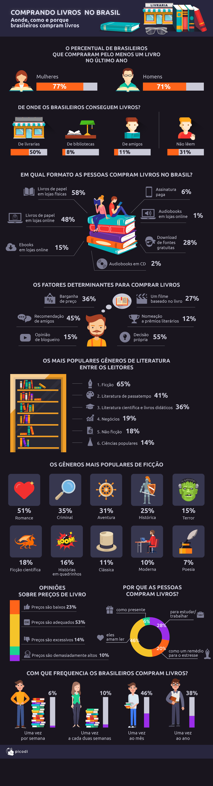

Segundo pesquisa realizada pelo Picodi.com em 2019, o Brasil é o 8° país que mais lê no mundo.
| Ranking mundial | ||
|---|---|---|
| Interesse por livros | ||
| País | Comprou pelo menos um livro | Não comprou nenhum livro |
| Turquia | 87% | 13% |
| Rússia | 82% | 18% |
| Espanha | 81% | 19% |
| Tailândia | 79% | 21% |
| Romênia | 78% | 22% |
| Malásia | 76% | 24% |
| Eslováquia | 75% | 25% |
| Brasil | 74% | 26% |
| Suíça | 74% | 26% |
| Hungria | 74% | 26% |
Sobre o índice de leitura exclusivamente do Brasil, acho interessante compartilhar uma imagem também do site Picodi.com
